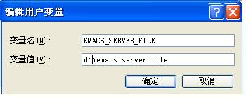
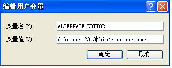
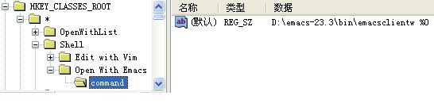
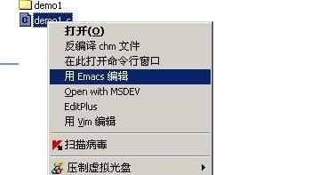

Windows上Emacs的安装及emacsclient进行C/S连接
一堆废话
在windows 上使用emacs .实在是个无奈之举.没办法,在公司大家都得用windows.
但刚用熟Emacs,实在不忍心就这样仍了它.虽然让Emacs委屈下嫁Windows,有让人联想鲜
花牛粪的不快,但"弱女虽非男，慰情聊胜无",大家就凑合凑合吧. 不知是大幸还是不幸
windows上有诸如cygwin MinGW之类的linux模拟器,但用起来常不经意的就给你开个小
玩笑,让你哭笑不得.让你看到一点希望,但又希望得如此渺茫,巴巴地让你看着看着,直
到磨掉你最后一点耐心.想来人生也不过如此,跑题了.
首先,在Windows上emacs – –deamon这个参数是用不上了,但总不能每打开一个文
档就要启动一个Emacs吧, 那样树懒也要开口大骂,嫌它太慢了.好吧，说一下什么是--
–deamon,在Linux 平台下，Emacs 可以这样运行：emacs – –daemon.这样运行后有
什么效果呢，什么效果也没有，你不会看到有任何窗口弹出。那怎么用它编辑文件呢，
没有窗口弹出的编辑器算哪门子编辑器。那就是在运行了这个命令之后运行另外一个命
令:emacsclient ,运行这个命令后并不会重新启动一个emacs进程，它只是作为一个客
户端连接到了emacs – –daemon 这个进程上。你配置文件中的所有配置在emacs --
–daemon 运行的时候就已经加载到内存了，当你运行emacsclinet 时它只是打开一个
窗口来编辑你的文件。这样就可以避免每打开一个文件，都要启动一个emacs 进程、重
新加载一遍你的配置文件这个费时费力费感情的动作了。
但是很可惜– –daemon 这个参数使用了Linux系统下有而Windows 没有的特性，
自然到了Windows 上，就没它什么事了。没法让Emacs做为后台服务启动,只好启动一个
Emacs之后再也不关闭,然后用emacsclient 或者gnuclient 去连这个没关闭的Emacs了.这
就好比你不让我躺在你家床上睡大觉,还不让我偶尔赖着你家沙发不走嘛,未免太不尽人
情了吧,人家可是有心在你这安家的.
额外提一点,要在windows上用好emacsclient gnuclient 还真的费一点事,其实搞
清楚的原理, 条理是很清晰的,但如果你跟Emacs仿佛古时的新婚男女,竟是初见,要你用
好它那 也确实有点让人为难.我没用gnuclient 也没用打过补丁的EmacsW32,只用
Emacs 自带的emacsclient,就已经足够了.
下载
下面从头到尾介绍Emacs 在Windows 上的安装及简单配置首先到这个目录下载
emacs 的安装包目前的最新版是23.3所以下载emacs-23.3-bin-i386.zip 这个这可以了.
上面这个是相对比较稳定正式发布的.而在这个 网站上的是Emacs 的最新版，一周一更
新，相对上面那个不太稳定，但绝对可用. 下载下来，放到一个目录中不包含空格，不
包含汉字的路径下。解压开后，里面有个bin目录，目录下有个addpm.exe ,点这个程序
以后会将Emacs加入到开始菜单中。另外还有个runemacs.exe 一般情况下用这个程序就
可以启动Emacs .你可以发送一个链接到桌面上，便于使用。另外有一个emacs.exe 这
个程序和runemacs.exe 一样。但是会启动一个黑窗口，也就是说它是一个用于在cmd下
使用的命令。另外还有emacsclientw.exe emacsclient.exe 这两个就是上面提到的客
户端程序如果仅仅是让Emacs 能用，到这里就可以结束了。双击runemacs.exe就可以使
用Emacs 了。
配置
- 关于Emacs 的配置文件 .emacs文件 及.emacs.d目录 及主目录(Home)
在Linux 下，每个用户都有属于它自已的目录称为主目录，即HOME变量所指向的目
录，如joseph用户的home 目录是指/home/joseph/这个目录。而Linux 下的程序的
配置文件都在用户主目录下，一般它们的配置文件都以点开头 ，这是因为linux 下
以点开头的文件是隐藏文件， 而Emacs的配置文件，请你用大腿想一想，就会猜到
它名叫.emacs了。而emacs 的配置文件用到后来内容会变得越来越大，比如我的配
置文件现在大概有30M ，把它存放在一个文件中会显得很乱，且不容易管理，所以
出现了.emacs.d目录。一般使用emacs的用户会把相应的配置文件分成一个个小文件
放到这个目录里。
在Windows下 默认情况下,emacs的配置文件是在这个目录下的C:\Documents and
Settings\Administrator\Application Data\也就是说这个目录大概等同于linux
的home目录。大哥,别让我连Administrator要替换成你的用户名都要告诉你. 在这
个目录下你可以创建.emacs这样一个文件,如果你运行emacs之后它没自动创建这个
文件,要让你自已创建它,说不定还真有点困难,因为默认Windows的资源管理器是不
能创建以点开头的文件及文件夹的,cmd.exe下可以用命令可以做到. 不过你可以创
建"_emacs"文件,效果与.emacs一样,前提是此目录下没有.emacs不要告诉我此目录
下已经有.emacs文件了,你还把配置的内容写到_emacs文件里,然后问我为什么配置
没起作用. 不过对"C:\Documents and Settings\Administrator\Application
Data\"这个目录我实在没有好感,它脸长得太长先不用说,单看看它路径里的空格数
量就够让你喝一壶的了,真想不通有点软为何要在在目录里加上一个空格,而有时偏
偏它又处理不好空格带来的麻烦.所以我首先要将默认的C:\Documents and
Settings\Administrator\Application Data\"目录修改为一个短一点的目录,譬
如: "d:\".还能更短吗? 如何修改,只要修改HOME系统变量就行了.
- 新建 HOME环境变量
大体步骤是这样的. 右击"我的电脑"~属性~环境变量,然后点击上面的那个"新建
",然后变量名输入"HOME"变量值输入"d:\",一路确定之后Home变量就设好了.
- 创建.emacs.d目录和.emacs文件
相信.emacs.d目录和.emacs文件是困扰大家很久的问题了，其实有个简单的办法可以解
决此问题。启动emacs，用鼠标点击Options菜单，随便点击一两个选项，比如点击一下
Active Region Highlighting，然后点击Save Options。先不要担心你会破坏了什么东
西，这样做的目的是让emacs自动创建.emacs.d目录以及.emacs文件！观察你的Emacs窗
口最后一行，是否显示“Wrote d:/.emacs”？如果是的话就对了，当你选择Save
Options的时候，Emacs会在home路径下产生.emacs文件，并把配置信息写进这个文件。
现在看看你的d:\目录下是否产生了这两个东西？
- 修改Path 变量，将D:\\emacs-23.3\\bin加入到Path中去，其实现在可以不加，
但为了以后使用方便，最好加上。
然后在d:\建.emacs或者_emacs文件在里面进行配置就可以了. Emacs用得时间长
了你的配置文件会变得很大很难管理所以一般大家都会建一个.emacs.d的目录,然
后把其他的配置文件放在这个目录里. 下面简单起见只用.emacs这一个配置文件.
- 配置d:\.emacs文件或d:_emacs
(setq server-auth-dir "d:\") (setq server-name "emacs-server-file") (server-start)
然后像建HOME变量一样建一个
- EMACS_SERVER_FILE 与 ALTERNATE_EDITOR环境变量
- EMACS_SERVER_FILE变量,值为"d:\emacs-server-file"

- ALTERNATE_EDITOR=d:\emacs-23.3\runemacs.exe

- EMACS_SERVER_FILE变量,值为"d:\emacs-server-file"
- 右键菜单中加入 "Open With Emacs"
下面要实现，在资源管理器的右键菜单中加入，"Open with Emacs"这个一个选项
。假设你把Emacs 解压到了d:\emacs-23.3\这个目录下。
用注册表编辑器新建这样一个项
[HKEY_CLASSES_ROOT\*\Shell\Open With Emacs\command] @="D:\\emacs-23.3\\bin\\emacsclientw.exe %0"或者下载这个reg文件,双击导入即可

